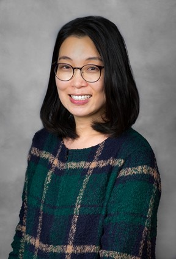
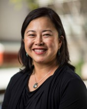

Cathy Basterfield (Access Easy English, Australia
What is happening with AAC in Australia
15:50, Jan. 8. 2024
Cathy owns and operates Access Easy English.
Cathy is a highly experienced speech pathologist from Australia, with a background of more than 35 years’ working with people with complex communication needs and in particular with people who have intellectual disability.
Her experience includes working with school age children and adults with their supporters.
The focus of her work has been about embedding functional AAC outcomes into the daily activities and interactions for the people she works with.
She provided editorial direction to the 2004 publication InterAACtion.
Cathy also has 35 years’ experience as a Key Word Sign Australia (formally Makaton) presenter.
She is a co-author on the Australian Key Word Sign resource Let’s Play with Sign and has been involved in the development of a number of their other resources.
Nearly 20 years ago, Cathy started the development of Easy English in Australia, including writing the first guidelines for writing easy-to-read Easy English.
This is still the basis of quality Easy English.
In 2022 Cathy and her team were recognised for their Easy English work with multiple national and international awards.
She publishes and presents internationally on this topic.

Pat Mirenda (University of British Columbia, Canada) (online live presentation)
A recipe for success: using AAC and other ingredients to support students with distressed behavior
9:30, Jan. 9. 2024
Pat Mirenda is Professor Emerita in the Department of Educational & Counseling Psychology and Special Education,
and past Director of the Centre for Interdisciplinary Research and Collaboration in Autism (CIRCA) at the University of British Columbia (UBC).
She taught graduate and undergraduate courses at UBC from 1994-2020 on applied behaviour analysis, augmentative communication, autism, inclusive education, and positive behavior support.
She was honoured as a Fellow of the International Society for Augmentative and Alternative Communication, the American Speech-Language Hearing Association, and the International Society for Autism Research.
She has published numerous research articles, books, and chapters and presents frequently at international, national, and regional conferences.

Sojung Kim (West Chester University, USA)
Linking Clinic with Classroom in Intensive Focused Preservice Education on AAC
10:30, Jan. 9. 2024
Sojung Kim, Ph.D., CCC-SLP is an associate professor and chairperson in the Department of Communication Sciences and Disorders at West Chester University of Pennsylvania, U.S.A.
Her teaching and research interests include AAC especially for adults with developmental disabilities and complex communication needs, early childhood intervention, quantitative and qualitative analyses, and scholarship of teaching and learning.
Before she entered academia, she had worked as an early intervention provider for the New York City Department of Health and Mental Hygiene, and a statistician and clinical supervisor in Infant Child Research Programs at Arizona State University, U.S.A.
With funding from the Pennsylvania State System of Higher Education, she currently serves as the principal investigator of the following two projects:
(1) the effect of experiential focused AAC education on graduate students’ self-efficacy and
(2) the effect of semi- and fully-immersive VR programs on literacy skills in adults with developmental disabilities and complex communication needs.

HyunJu Park (Gachon University, Republic of Korea)
Early Acceptance and Implementation of AAC Interventions
14:00, Jan. 9. 2024
Dr. Hyunju Park, PhD, is vice dean of the Graduate School of Professional Therapy at Gachon University in South Korea, where she has also served as the head of the Center for Integrative Development and Psychology since 2015.
She majored in special education and speech and language pathology, and has taught graduate-level introductory courses on communication sciences and disorders, as well as more in-depth courses on language development disorders and augmentative and alternative communication (AAC).
She has recently lectured on language development disorders and autism spectrum disorder for speech and language pathologist training programs being held in Vietnam and Laos,
and is currently contributing to a digital treatment development program for the strengthening of communicative competencies in children with autism spectrum disorder
as part of her current research focus on increasing the capabilities of stakeholders in AAC intervention.

Soojung Chae (Jeonju University, Republic of Korea)
Facilitating Communication for AAC Users: Directions to Support Community Integration
14:30, Jan. 9. 2024
Dr. Soojung Chae, Ph.D., is an associate professor in the Department of Secondary Special Education at Jeonju University, Jeonju, Republic of Korea.
Dr. Chae's research broadly focuses on how to expand and sustain communication skills of people with communication disorders using AAC methods,
and how to perceive graphic symbols for people with developmental disabilities in terms of translucency and transparency.
Her life's work includes supporting lifelong education for individuals with developmental disabilities to drive social change through local educational centers.

Yoosun Chung (George Mason University, USA) and Wendy Quach (San Jose State University, USA)
Effects of USSAAC Emergency Toolkit for AAC Users
9:30, Jan. 10. 2024
Yoosun Chung is an associate professor in the Division of Special Education and disAbility Research within the College of Education and Human Development at George Mason University.
Chung earned both her bachelor’s degree in Computer Science (CS) and her doctoral degree with a specialization in Assistive Technology (AT) from the same institution.
She holds a master’s degree in CS from Cornell University.
Her research interests include individuals who use augmentative and alternative communication (AAC), individuals with disAbilities and the application of AT.
Chung has been serving as the Past President of the United States Society for AAC (USSAAC) since January 2022.
She is a distinguished educator, having been the recipient of both the 2020 Online Teaching Excellence Award and the 2012 Teaching Excellence Award – Teaching with Technology from the Stearns Center for Teaching and Learning at George Mason University.
She was also recognized with the Edwin and Esther Prentke AAC Distinguished Lecture Award from American Speech-Language-Hearing Association (ASHA) in 2017 and WORDS+/ISAAC Outstanding Consumer Lecture Award from the International Society for AAC (ISAAC) in 2006.

Wendy Quach, Ph.D., CCC-SLP, is a licensed, certified speech language pathologist and professor in the Department of Communicative Disorders and Sciences at San José State University.
Her teaching and research interests are in the areas of augmentative and alternative communication (AAC) for people with complex communication needs and motor speech disorders.
She is actively engaged in several collaborative research, which have led to publications and national/international presentations.
Dr. Quach was a co-PI on the NIDILRR grant, Optimal Augmentative and Alternative Communication Technology for Individuals with Severe Communication Disabilities: Development of a Comprehensive Assessment Protocol.
She was PI for several training grants to increase the knowledge and skills of graduate students in the area of AAC.
Dr. Quach has a passion for instilling research in her students and has mentored several students on various projects related to AAC.
She earned her doctorate from the University of Nebraska-Lincoln. Prior to that, she worked in Canada and England with adults and children in a variety of settings, including public schools, hospitals (rehab and acute),
and community clinics. In her "free time", she enjoys traveling, photography, yoga, reading, and eating (especially dark chocolate).